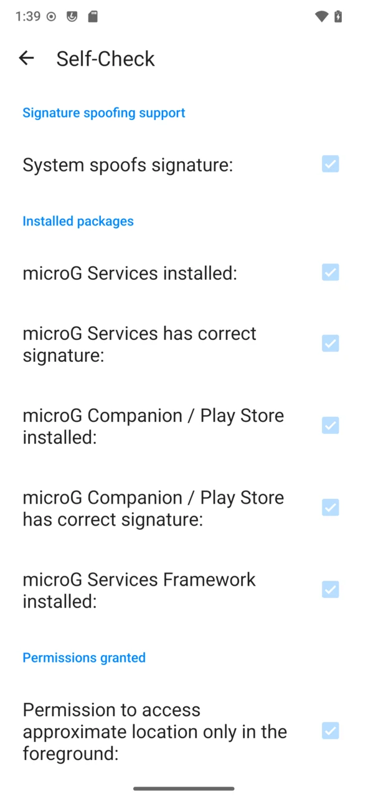

microG 快问快答：安卓去谷歌化绕不开的那个名字
整理一篇关于 microG 的问答速查——它是什么、组件怎么装、定位后端怎么挑、推送通知为啥开了没反应、安卓版本有哪些坑，一次性讲清。
整理一篇关于 microG 的快问快答，把社区里最常被问的问题挑出来挨个讲透。
microG 到底是什么？谁需要装它？
microG 的官网上写得明明白白，它就是 Google Play Services 的开源替代实现，给那些不装 GMS（Google Mobile Services）的安卓设备提供谷歌 API 的兼容层。简单说：你的手机没装谷歌全家桶，但有一些应用跑起来要用到谷歌的账号服务、推送通知、网络定位这些东西——microG 就是让这些东西能跑起来的那个中间件。
两类人最需要它：一类是刷机党，刷了 LineageOS 或其他去谷歌化的 ROM；另一类是用鸿蒙、部分国产定制系统，原生不带谷歌服务但偶尔要跑谷歌系应用的用户。

装了 microG 就能完整替代谷歌全家桶吗？组件构成是怎样的？
不能。microG 只覆盖了 GMS 提供的那一部分 API，它不提供 Play 商店本身，也不包含 Gmail、YouTube 这类独立应用。核心的可安装 APK 有三个：microG Services（包名 com.google.android.gms，必装，也就是 GmsCore，绝大多数谷歌 API 都靠它）、microG Companion（包名 com.android.vending，推荐装，处理应用许可校验等商店相关的调用）、Services Framework Proxy（包名 com.google.android.gsf，按需装，兼容远古 C2DM 推送协议）。这仨安装包都能从官方下载页面拿到。
另外还有两块已经内置进 Services、不需要单独安装的东西：UnifiedNlp（网络定位中间件）和 DroidGuard Helper（设备完整性验证）。早年版本里这俩是独立应用，现在直接集成了，旧版可以放心卸载。
最头疼的网络定位怎么搞？UnifiedNlp 是什么来头？
UnifiedNlp 是 microG 内置的网络定位中间件。安卓应用要"大致位置"（城市级、街区级）时，默认问的是谷歌的网络定位服务——用周边 WiFi 热点与基站指纹换坐标。没有 GMS 的设备上，这个角色就由 UnifiedNlp 承担。它本身不认识路，把"查坐标"这件事转包给可插拔的后端，装哪个后端、开不开，全由你决定。
它和 GPS 卫星定位的分工是这样的：GPS 精度米级、冷启动慢、需要开阔天空；UnifiedNlp 精度街区到城市级、速度快、依赖 WiFi/基站数据与后端。microG 已经实现了融合定位，应用请求位置时走的是融合接口——GPS 可用时用 GPS，室内或省电场景落到网络定位。UnifiedNlp 只负责其中网络这一半。
以前教程里必提的 Mozilla 定位服务还能用吗？现在有哪些后端可选？
不能用了。Mozilla Location Service 已于 2024 年停止运营，对应后端随之失效。网上大量旧文仍把它当默认推荐，注意甄别。目前社区接棒的后端主要有三种类型：在线众包型（Radiocells、beaconDB 等，上报周边 WiFi/基站指纹查询社区数据库，覆盖随社区增长但会暴露活动区域环境指纹）、离线本地型（Déjà Vu、Local GSM/WiFi Backend 等，自己边走边攒数据库，设备内查询，零上报但常去区域之外基本不可用）、单一来源型（Apple 等第三方公开接口，覆盖广即装即用但依赖第三方服务的稳定性与政策）。
推荐组合按需求挑：隐私优先选一个离线本地型，日常通勤路线攒熟后够用；省心优先选一个在线众包型加地址查询后端，开箱即有覆盖；折中方案是在线型加离线型同时勾选，框架按可用性取用。别忘了坐标到地名的翻译由独立后端完成（社区常用基于 Nominatim 的方案），只装位置后端的话，应用能知道你在哪却报不出城市名，别当成定位坏了。后端随时可换，在 UnifiedNlp 设置里取消勾选旧项、勾选新项即可，卸载后端应用即彻底移除。更细致的配置细节和验证方法可以翻microg文档。
推送通知怎么开？三步搞定了为什么有时候还是收不到？
开推送有三个必做步骤，一个别漏。第一步：进 microG 设置主页，确认"注册设备"和"云消息"两项都已勾选。只开云消息不注册设备，或反过来，推送都可能在半路卡住。第二步：到系统设置的电池优化里找到 microG Services，设为不优化或允许后台运行。安卓 6.0 起的省电机制会掐断长连接，官方 Play Services 也是这样要求的，这不是 microG 的特殊待遇。华为等深度定制系统入口不同，需要单独找对应的电池设置页面。第三步：改完开关与电池设置后重启一次，让所有后台服务以新状态拉起。跳过重启可能一切正常也可能各种灵异，别赌。
开了三步还是收不到的话，记得分层排查：系统层（电池优化有没有真的豁免）、框架层（microG 里两个开关有没有都开）、应用层（应用自己的通知权限有没有开）。部分应用还有自己的省电模式，应用内关了通知，microG 这边通到天边也没用。另外，验证通道是否真正打通不能只看设置界面——装一个依赖推送的聊天类应用，用另一个设备发消息，几秒到几十秒内到达才是真的通了，退到后台甚至锁屏后再测一轮才是真实场景。
Companion 是个什么东西？需要另外装商店吗？
Companion 占用的是 Play 商店的包名 com.android.vending，但它本身不是商店，不提供应用浏览与下载界面。它的职责是让那些"检查正版授权""依赖商店组件"的应用调用有地方落地。想真正下载应用，社区通行做法是搭配 Aurora Store 这类开源客户端使用，后者可以在有或没有 microG 的环境下独立工作。
Companion 装不装取决于你用的应用——如果经常碰到打开就弹"需要 Google Play 商店"的提示，装上能省很多麻烦；如果日常用的应用都不依赖商店组件，其实可以跳过。
SF Proxy 什么时候才用得上？
Services Framework Proxy 是兼容老旧 C2DM 推送协议的桥接层。只有极少数依赖远古 C2DM 的应用才用得上它，绝大多数现代应用都走 FCM，装不装基本无感。另外要注意，在安卓 15 及以上系统，它的普通安装可能失败，需要通过电脑用 adb 附加参数绕过安装。
安卓版本有什么坑需要提前知道？
最大的一个在安卓 7 之后：普通应用权限的网络定位会被系统拦。要让 UnifiedNlp 的定位真正工作，要么给系统打对应补丁，要么把 microG 装成系统特权应用（放到 /system/priv-app/ 路径下）。多数预装 microG 的 ROM 和华为 -hw 构建已经处理妥当，自己动手装的遇到"网络定位不工作"，先想到这条限制。
还有一些小细节：部分系统的 SELinux 策略可能阻止 microG 某些组件正常运行，刷了第三方 ROM 的用户在 SELinux 从 Enforcing 降到 Permissive 后功能恢复正常的情况并不少见；Aurora Store 下载应用时偶尔会碰到签名校验问题，这通常不是 microG 的锅，而是 Aurora 本身的兼容性 bug。
最后一句：如果你还在纠结要不要装，答案很简单——装上，按上面的步骤配置好，手机该怎么用还怎么用，等哪天碰到需要谷歌账号的应用直接登就行。社区维护的安装资料和配置说明同时托管在GitHub、Gitee、GitCode三个平台，哪个顺手看哪个。